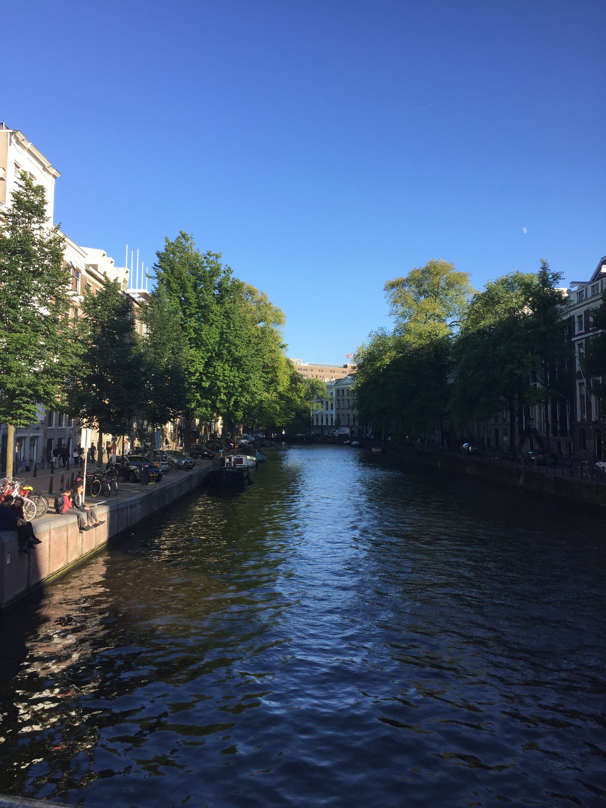

Hi! My name is Kim — an interior design enthusiast with a Master's degree who's recently discovered a passion for web development. I find that visual design skills transfer beautifully into crafting elegant, user-focused digital experiences.
I also bring a strong foundation in digital tools like Adobe Creative Cloud, Canva, Revit, and AutoCAD — all of which shape the way I approach problem-solving, layout, and hierarchy in the digital space.
Outside of tech and design, I’m into staying active (hello, Peloton workouts!) and traveling with my husband. My favorite destinations so far include:
- Amsterdam — vibrant culture and canals
- Barcelona — architecture and food
- Cinque Terre — stunning cliffside trails
